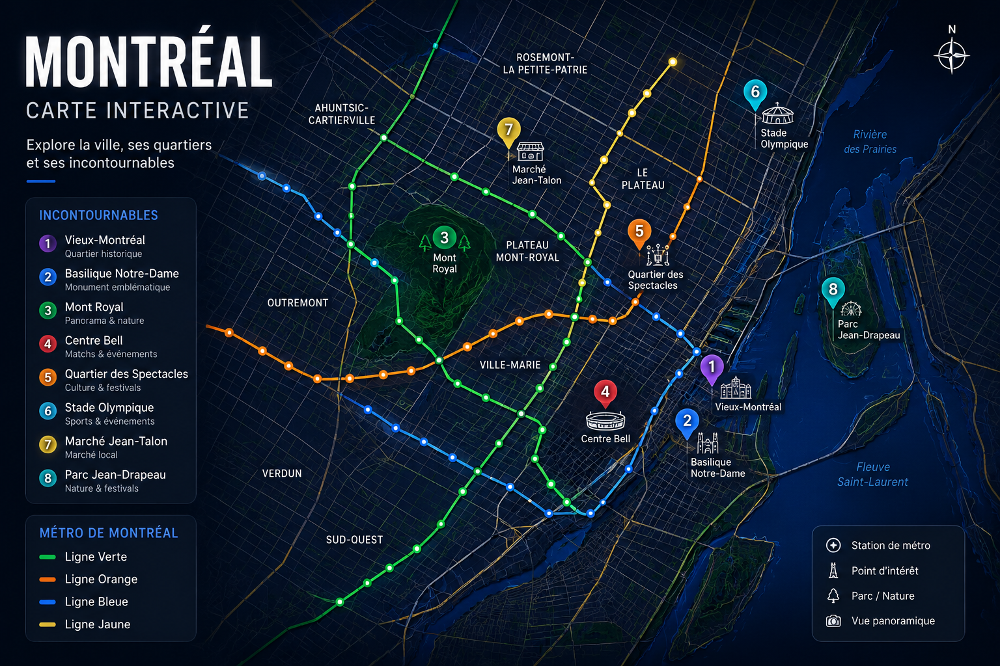

Retrouve le Vieux-Montréal, le métro montréalais, Mont Royal, le Centre Bell, les festivals, les rooftops et les lieux incontournables de Montréal.

Le réseau STM permet d’explorer Montréal facilement toute l’année.
Découvre l’ambiance hockey et les grands événements sportifs canadiens.
Explore les rues historiques, les cafés et l’ambiance européenne unique de Montréal.
Jazz Festival, Osheaga, rooftops et nightlife rendent Montréal très vivante.
Découvre les meilleures activités, festivals, restaurants, rooftops, événements sportifs et expériences incontournables à Montréal.
Retour au guide Montréal →